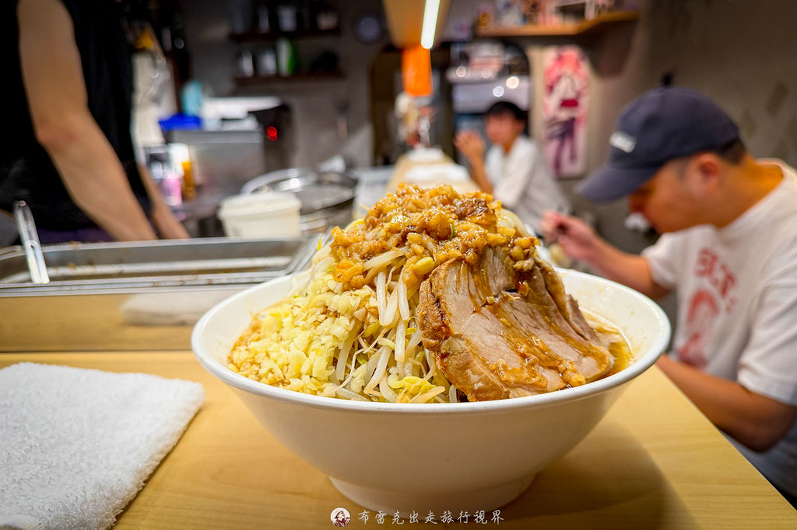

台北拉麵｜龍人拉麵台灣本店：市民大道二郎系小山系拉麵

一句話摘要
龍人拉麵台灣本店是市民大道上的二郎系拉麵店，賣點是高聳蔬菜、厚切叉燒、粗麵、豬背脂與蒜末的重口味組合；第一次去建議從一般客製化份量開始，不要被「大中小同價」與三倍野菜誘惑到吃不完。
來源脈絡
這篇來自「布雷克的出走旅行視界」2026-09-07 發布的食記，原文標題為〈堆得像小山的二郎系拉麵，超濃豬背脂與蒜頭直拳攻擊〉。作者以國父紀念館站周邊拉麵食記角度，記錄店家位置、排隊規則、點餐機菜單與原味二郎系拉麵實吃心得。
店家資訊
| 項目 | 資訊 |
|---|---|
| 店名 | 龍人拉麵台灣本店 |
| 地址 | 臺北市松山區市民大道五段七號 |
| 交通 | 捷運國父紀念館站 5 號出口步行約 7 分鐘 |
| 常見營業時間 | 11:30–14:00、17:00–21:00 |
| 付款 | 原文註記只接受現金 |
| 點餐 | 門口旁點餐機；現場排隊 |
| 內用規則 | 一席至少一碗麵、全員到齊後入內點餐、不提供打包 |
提醒：拉麵店營業時間、售價、排隊規則可能調整，出發前建議再查 Google Maps 或店家最新公告。
吃什麼
| 品項 | 原文價格與重點 | 適合情境 |
|---|---|---|
| 原味拉麵 | NT$270；原文推薦的二郎系主力款 | 第一次想吃店家代表味道 |
| 拌麵 | NT$270；同樣可選麵量與客製化 | 想吃比較乾拌、油麵感的路線 |
| 辣味 | NT$300 | 喜歡重口味再加辣度的人 |
| 麵量 | 大、中、小同價；小碗約 200g 仍有份量 | 第一次建議小或中，不要硬攻大碗 |
| 客製化 | 菜量、蒜量、油脂、濃淡可調；野菜可到 3 倍 | 熟悉二郎系後再加量比較安全 |
口味判讀
原文試的是原味拉麵，並把野菜、蒜頭、背脂都選兩倍量。視覺主軸是豆芽菜與高麗菜堆成小山，上方有大量豬背脂，旁邊配一大坨蒜末；湯頭走超濃豬背脂與蒜香的直球路線，濃郁但作者覺得順口。
叉燒被描述為厚切、肉感強、入味，能扛住二郎系的重口味。麵條則偏粗、有嚼勁，能吸附湯汁；整體不是清爽派，而是適合想大口吃麵、大口吃肉、接受蒜味與油脂存在感的人。
出發前檢核表
- 現金帶夠：原文註記只接受現金付款。
- 人到齊再排／入內：原文提到店門口排隊須知要求全員到齊。
- 食量先保守：大中小同價很誘人，但小碗加料後也可能很飽。
- 客製化先一般：第一次可先照店家建議選一般份量，二訪再挑戰兩倍或三倍野菜。
- 不要預期外帶：原文註記為維持品質不提供打包。
- 行程搭配：適合排在國父紀念館站、市民大道、松山文創園區或東區周邊用餐動線。
判讀限制
本文保留的是 2026 年 9 月食記資訊；拉麵店常因人手、湯量或臨時公告調整營業，價格與規則也可能異動。實際出發前建議再用地圖、社群或最新評論確認。
相關連結
- 原始食記：https://blake.com.tw/blog/post/long-ren
- Google Maps 搜尋：https://www.google.com/maps/search/?api=1&query=%E9%BE%8D%E4%BA%BA%E6%8B%89%E9%BA%B5%E5%8F%B0%E7%81%A3%E6%9C%AC%E5%BA%97%20%E8%87%BA%E5%8C%97%E5%B8%82%E6%9D%BE%E5%B1%B1%E5%8D%80%E5%B8%82%E6%B0%91%E5%A4%A7%E9%81%93%E4%BA%94%E6%AE%B5%E4%B8%83%E8%99%9F